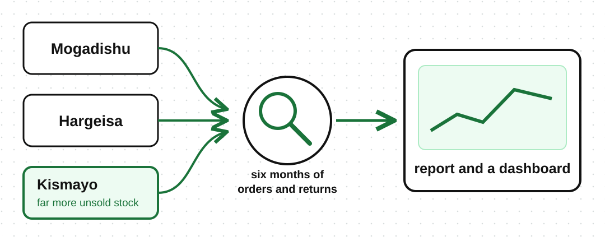

A wholesaler supplies shops in Mogadishu, Hargeisa, and Kismayo. The manager sees that some shops keep ordering products, while other shops send many products back unsold. She wants to understand what is happening and decide what to order next. This is where data analysis becomes useful.
Data analysis means looking at data, cleaning it, organizing it, and using it to find useful answers.
Data analysis may involve:
Data analysis often answers questions like:
Which products were ordered the most?
Which city sent back the most unsold stock?
What should the manager order next?
The result depends on the question. Data analysis can produce:
A finding that explains what happened
A report that shows what the data found
A metric that tracks something important
A dashboard that keeps results visible over time
A KPI (key performance indicator) is a metric used to measure progress toward a goal.
A wholesaler supplies shops in Mogadishu, Hargeisa, and Kismayo, and wants to know how each is doing.
The analysis answered the manager's question and helped her decide what to order next.
